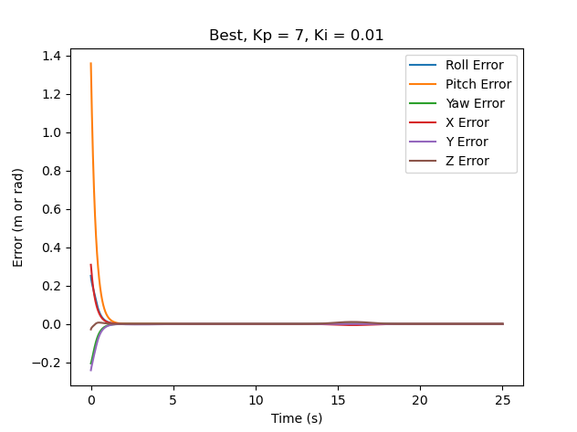
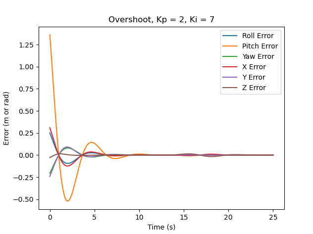
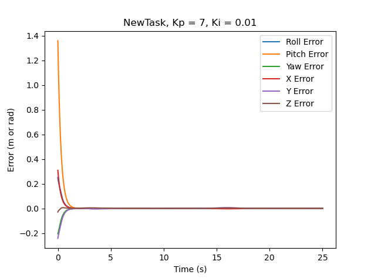

Mobile Manipulation Using the Kuka youBot
Overview
In this project, I wrote software to control the youBot to pick up a cube at a specified location, carry it to a desired location, and put it down. There were three simulated trajectories: best, overshoot, and newTask. They were all simulated in CoppeliaSim.
Algorithm
There are three important functions in the program: NextState, TrajectoryGenerator, and FeedbackControl.
NextState takes in the current robot configuration and the joint speeds to calculate the future configuration (chassis phi, chassis x, chassis y, arm joint angles, and the wheel angles) using the first-order Euler method.
TrajectoryGenerator generates configurations (transformation matrices and gripper states) of the end-effector along the eight-segment reference trajectory. The reference trajectory consists of the following:
- A trajectory to move the gripper from its initial configuration to a "standoff" configuration a few cm above the block
- A trajectory to move the gripper down to the grasp position
- Closing of the gripper
- A trajectory to move the gripper back up to the "standoff" configuration
- A trajectory to move the gripper to a "standoff" configuration above the final configuration
- A trajectory to move the gripper to the final configuration of the object
- Opening of the gripper
- A trajectory to move the gripper back to the "standoff" configuration
Finally, FeedbackControl calculates the kinematic task-space feedforward plus feedback control law using Kp, Ki, and the robot configurations. Using the commanded end-effector twist (Ve) calculated from the control law and the pseudoinverse of the end-effector Jacobian (Je), the commanded wheel and arm joint speeds are computed.
Results
best
In best, a well-tuned controller (feedforward-plus-PI with Kp = 7 and Ki = 0.01) was used to allow the robot to pick up the cube and place it at a designated location. In the animation, the motion was smooth, and there was no oscillation. As shown in the plot, the error converges to zero before the end-effector reaches a standoff configuration above the cube. However, there is a very little error when the end-effector goes to the final configuration of the cube.

overshoot
In overshoot, a less well-tuned controller (feedforward-plus-PI with Kp = 2 and Ki = 7) was used to allow the robot to accomplish the same tasks. In the animation, when the robot goes to the cube, the end-effector slightly goes past the initial location of the cube, but adjusts its position to pick up the cube and continues to move to the final location to place the cube. The plot clearly shows that the end-effector oscillates back after it slightly goes past the cube.

newTask
In newTask, a well-tuned controller (feedforward-plus-PI with Kp = 7 and Ki = 0.01) was used to allow the robot to pick up the cube at a different location and place it at a different goal location. The initial configuration of the cube was changed to (0.5 m, 0.5 m, 0 rad) and the goal configuration of the cube was changed to (0 m, -0.6 m, -1.57079632679 rad) in CoppeliaSim. Just like in the plot for best, the error converges to zero before the end-effector reaches a standoff configuration above the cube. However, there is a very little error when the end-effector goes to the final configuration of the cube.
